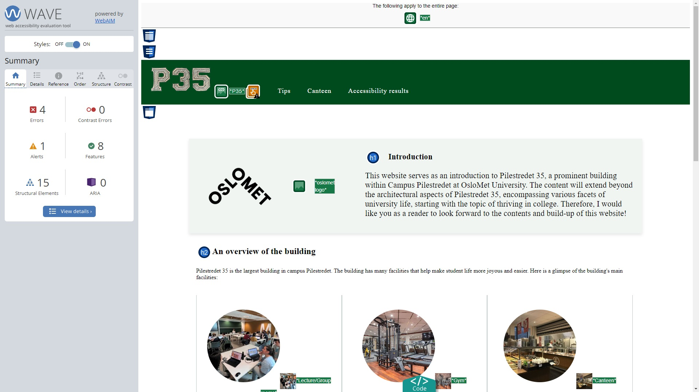
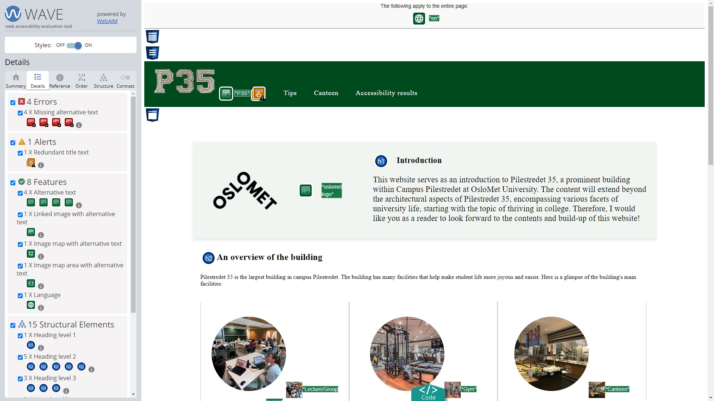
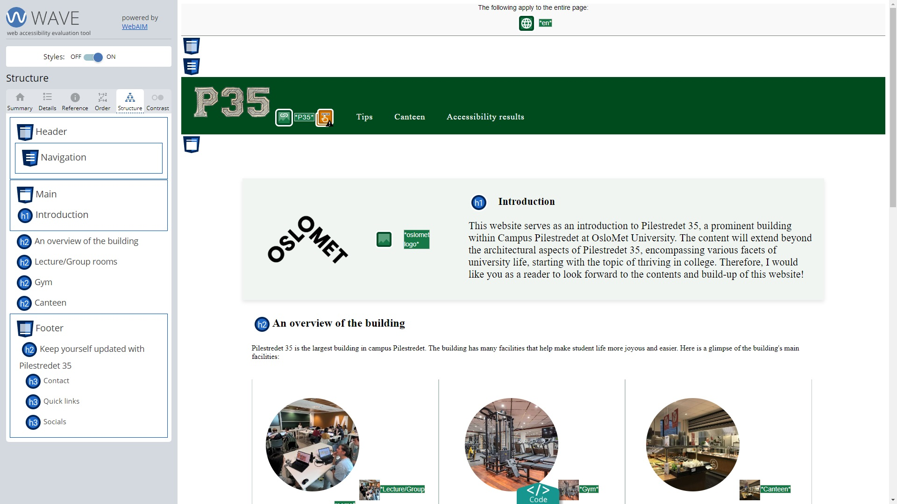
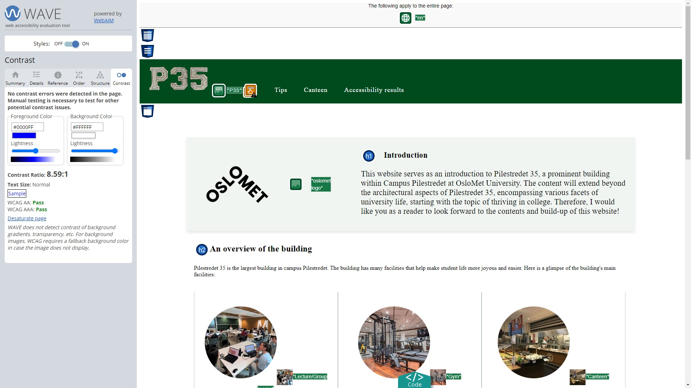

Accessibility and Universal Design
A world of universal design
Universal design is a necessity which brings more unity and equity to our diversified world. Devices are continously becoming more and more universally available, ensuring that anyone, regardless of disabilities, can benefit from them.
Specific coding choices
All our pages contains styling properties that takes accessibility into consideration in multiple ways.
-
Well Structured:
The pages were designed so it has a well structure design with Header, footer, main content seperated out in a structured manner.
Also made sure to start and end the tags accordingly during development. -
Clear content:
The pages were designed so that the content is clear and can be conveyed through images and short texts with it. -
Scaling:
In order for the website to scale according to viewing window size and client (pc or mobile), standard scaling design practices were tried to be used.
Usage of percentages instead of px was preferred wherever possible.
Usage of em or rem instead of px.
Designing the sites header footer and content with scaling in mind. -
Colors and Contrast ratio:
The pages and colors chosen were designed so the colors have proper contrast that even people with impaired vision can view the page without strain.
To make it simple the background of the main content was chosen to white or light in color with the texts mostly being in black.
In Tips pages which followed a different style, the colors followed were consistent with the header and footer to keep color contrast as consistent and pleasant as possible. -
Focus state:
The page considered having focus states when users hover over images or topics to make it clear the area which is read or focused. -
Text size:
The pages were designed so that text sizes of all important headings and text were kept large and readable enough to help with readability for visually impaired users. -
Images and alternative texts:
All pages designed to provide alternative text for images, along with the titles -
Hover state:
Pages designed so that when the user hovers over the page, bold font or underlines will appear to show the selected links. This can be beneficial for those with motor issues and vision impairment.
Accessibility results
To Test the accessibility of the pages WAVE, web accessibility evaluation tool was used, because it is known as one of the most thorough accessibility checking engines.
The chrome extension of WAVE was used for automatic testing of accesibility of the pages and site.
The web accessibility of the pages were tested using WAVE as detailed below:
-
Summary of the results:
All Errors and Alerts were immidiately addressed.
There were no contrast errors found. Features and Structural elements were found to be as per universal standards as well.
 -
Details of the results:
Details of the results were checked.
 -
Structural Elements:
Checked the detailed structural elements of each page to see if all pages are well structured and as per the design standards.
 -
Contrast Ratio:
The constrast ratio provided the contrast ratio on average of the page and if it has passed WCAG AA and AAA standards.

WAVE has a variation of icons which collectively shows the accessibility of the page.
- Errors:
- Contrast Errors:
- Alerts:
- Features:
- Structural elements:
- Aria: